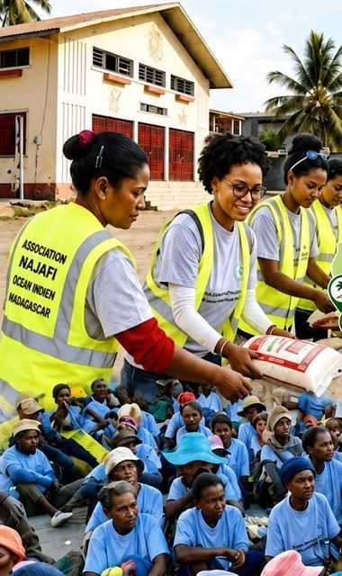

Aides alimentaires hebdomadaires à Madagascar
Ensemble,
offrons un avenir.
Najafi Océan Indien est une association basée à La Réunion qui distribue chaque semaine des repas et des denrées de base aux familles les plus démunies du sud-ouest de Madagascar.

Notre mission
Depuis 2014, nos bénévoles organisent des distributions alimentaires régulières : riz, denrées de base et repas, directement remis aux bénéficiaires dans chacun de nos centres.
Chaque don finance concrètement ces distributions. Offrez-leur un repas, offrez-leur de la dignité.
- Distributions chaque semaine, toute l'année
- Des bénévoles sur le terrain, à Madagascar
- Un reçu fiscal délivré sur demande
Nos centres
Vos dons agissent ici — et bientôt ailleurs.
Les dernières nouvelles du terrain
Nous soutenir & nous contacter
Votre générosité est leur espoir.
Aidez-nous à poursuivre les distributions. Un reçu fiscal pourra être délivré sur demande.
💚 Faire un don
Par virement bancaire
Pour recevoir un reçu fiscal, indiquez votre nom dans le libellé du virement puis envoyez-nous un message via le formulaire.